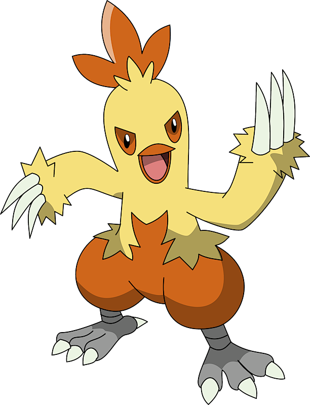
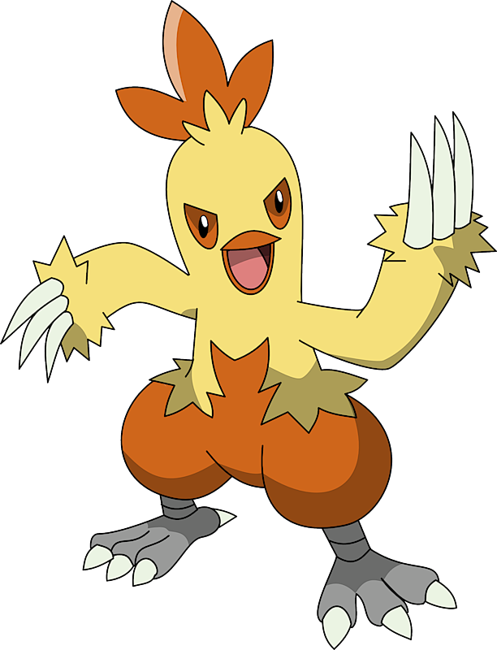
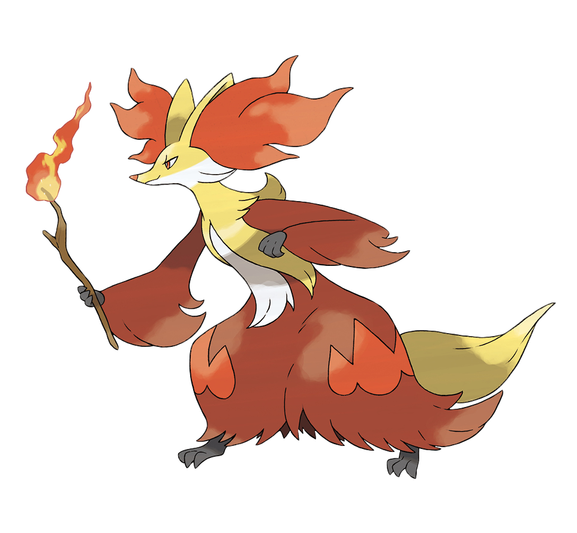
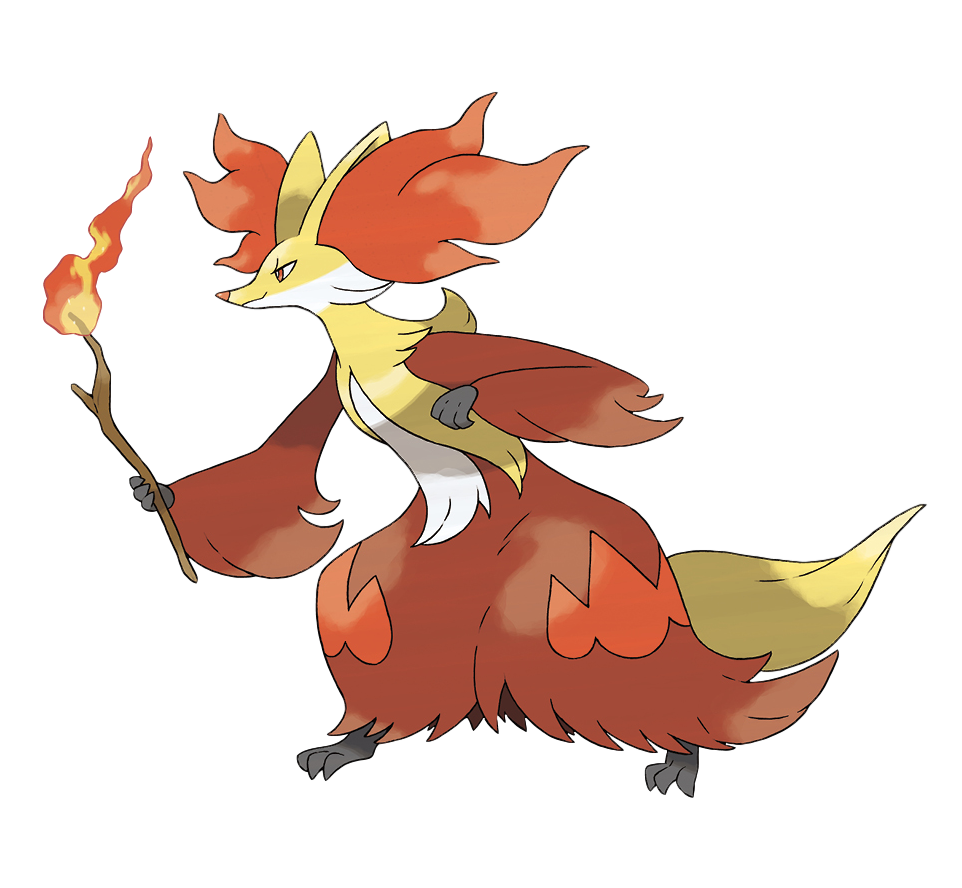
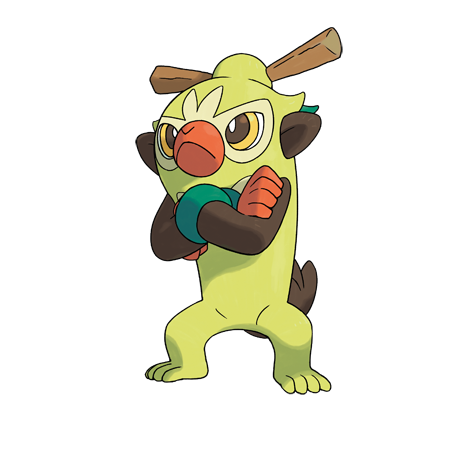
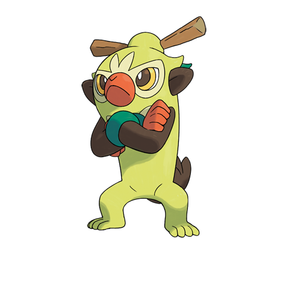

POKECHOICHE
POKECHOICHE
 POKECHOICHE
POKECHOICHE

Charmander:
Charmander es un pequeño lagarto bípedo. Sus características de fuego son resaltadas por su color de piel anaranjado y su cola con la punta envuelta en llamas.
Este evoluciona a Charmeleon a nivel 16 y despues a Charizard a nivel 36


Es un pokemon timido y pequeño, su piel es azulada en la parte superior de su cuerpo pero color crema en la parte inferior, una de las caracteristicas de el es que puede encender su llama a voluntad a diferencia de otros pokemones tipo fuego con llamas en su cuerpo.
Este evoluciona a Quilava a nivel 14 y despues a Typhlosion a nivel 36.
Torchic esta cubierto por una suave capa de plumas con tonos anaranjados, sus alas no sirven para volar debido a su pequeño tamaño, este se mantiene siempre cerca de su entrenador siguiendolo mientras aprende a caminar, tiene un saco al interior de su estomago ardiendo todo el tiempo, el cual le permite arrojar habilidades de tipo fuego en sus batallas.
Este evoluciona a Combusken a nivel 16 y despues a Blaziken a nivel 36.
 

Esta basado en un bebe babuino y se demuestra por lo grande de sus orejas y su pequeño hocico, su pelaje es un color naranja palido, posee una llama en su cola que es producida cuando el gas de su estomago se quema, esta no se apaga con la lluvia aunque si cuando el va a dormir y tiene gran agilidad sobre todo en los arboles.
Este evoluciona a Monferno a nivel 14 y despues a Infernape a nivel 36.


La esfera roja que tiene en la cola absorbe los rayos solares convirtiendolos en pura energia que pasa al centro de su cuerpo, fortaleciendo sus ataques de tipo fuego, la esfera de su cola empieza a brillar con gran intencidad dependiendo que habilidad este utilizando, al evolucionar esta esfera desaparece de la cola para aparecer en el centro de su cuerpo donde antes se acumulaba toda la energia absorbida.
Este evoluciona a Pignite a nivel 17 y despues a Emboar a nivel 36.


Tiene el cuerpo de color amarillo con detalles en blanco, sus ojos son alargados y de color anaranjado al igual que el pelaje que sale de sus orejas y al final de su cola, a este pokemon le encanta mordisquear ramitas y le emana un aire abrasador por las orejas.
Este evoluciona a Braixen a nivel 16 y despues a Delphox a nivel 36.
 

Su pelaje es muy graso y altamente inflamable, este se lame para acicalarse y luego prende las bolas de pelo que se forman en su estómago para atacar a sus adversarios con bolas de fuego, cuando a Litten le llega la hora de cambiar su pelaje, le prende fuego y se produce un estallido de llamas monumental, eriza el pelo de su lomo para intimidar a sus enemigos.
Este evoluciona a Torracat a nivel 17 y despues a Incineroar a nivel 34.

Scorbunny es un conejo blanco con un naranja rojizo tanto en las orejas como en los pies y una tirita naranja en su cara justo entre los ojos, se vale de sus poderosas patas para correr y saltar alrededor de sus adversarios, lo que los confunde y desorienta. Las plantas de las patas alcanzan altas temperaturas, y con ellas puede quemar a sus rivales cuando los patea.
Este evoluciona a Raboot a nivel 16 y despues a Cinderace a nivel 35.

Squirtle:
Es una de las especies más difíciles de encontrar. Habita tanto aguas dulces como marinas, preferiblemente zonas bastante profundas. Son pequeñas tortugas color celeste con caparazones color café; o rojas en algunos casos, con una cola enrollada que los distingue. Poco después de nacer, sus caparazones se endurecen y se hacen más resistentes a los ataques; muchos objetos rebotarán en ella.
Este evoluciona a Wartortle a nivel 16 y despues a Blastoise a nivel 36.


Tiene un pequeño cuerpo de color azul con una banda amarilla que cruza su pecho, en su espalda y su cola tiene cuatro puntas rojas, tiene una gran y prominente quijada, llena de muchos dientes agudos, con la que puede incluso romper rocas pequeñas.
Este evoluciona a Croconaw a nivel 18 y despues a Feraligatr a nivel 30.

La cresta en la cabeza de Mudkip actúa como un radar altamente sensible, esto le permite sentir los movimientos del agua y el aire, con lo que puede determinar qué es lo que ocurre a su alrededor sin usar sus ojos, cuando está en el agua, respira utilizando las puntas de sus mejillas, ya que realmente son branquias.
Este evoluciona a Marshtomp a nivel 16 y despues a Swampert a nivel 36.


Viven junto a sus demás evoluciones en grandes colonias dirigidas por un Empoleon, el patriarca, reciben una dura instrucción, pues la vida en colonia suele ser dura y cada uno tiene que mirar por sí mismo, pese a eso los padres le ofrecen ayuda y alimento constante durante los primeros meses, hasta que el joven Piplup sea capaz de proveerse el mismo.
Este evoluciona a Prinplup a nivel 16 y despues a Empoleon a nivel 36.


Posee manchas a los lados de su cara, haciendo referencia a las barbas cortas que poseen las nutrias jóvenes, también posee un extraño "collar" alrededor de su cuello, que recuerda a pequeñas burbujas, el torso de Oshawott es de color azul claro y posee una especie de adhesivo que mantiene su concha de color amarillo pálido pegada en el centro, hecha de queratina, esta concha se puede quitar y es utilizada con la versatilidad de una espada.
Este evoluciona a Dewott a nivel 17 y despues a Samurott a nivel 36.


Tiene el cuerpo de color celeste con una franja azul oscura entre sus ojos de color amarillo y pupilas negras, posee una especie de espuma de color blanco en su nariz y a su vez éste también rodea su cuello y llega hasta la espalda, tiene una coloración blanca en sus manos que se asemejan a guantes.
Este evoluciona a Frogadier a nivel 16 y despues a Greninja a nivel 36.


Es capaz de crear globos de agua por la nariz y utilizarlos como parte de sus distintas estrategias y ataques en los combates, este Pokémon se mueve con más soltura en el agua que en tierra firme y puede nadar a velocidades que superan los 40 km/h, cuando está fuera del agua, aprovecha la elasticidad de sus globos para ejecutar saltos y otras acrobacias.
Este evoluciona a Brionne a nivel 17 y despues a Primarina a nivel 34.

Es algo tímido y ataca a distancia mientras está escondido en el agua, al tocar el agua, las marcas y el color del cuerpo de Sobble cambian, lo que le permite mimetizarse con el entorno, como es un poco tímido, en cuanto se siente avergonzado o se pone nervioso, segrega agua como si de sudor se tratase para camuflarse.
Este evoluciona a Drizzile a nivel 16 y despues a Inteleon a nivel 35.

Bulbasaur:
Es un Pokémon cuadrúpedo de color verde y manchas más oscuras de formas geométricas, su cabeza representa cerca de un tercio de su cuerpo, en su frente se ubican tres manchas que pueden cambiar dependiendo del ejemplar, tiene orejas pequeñas y puntiagudas, sus ojos son grandes y de color rojo, las patas son cortas con tres garras cada una, este Pokémon tiene plantado un bulbo en el lomo desde que nace, esta semilla crece y se desarrolla a lo largo del ciclo de vida de Bulbasaur a medida que suceden sus evoluciones, el bulbo absorbe y almacena la energía solar que Bulbasaur necesita para crecer.
Este evoluciona a Ivysaur a nivel 16 y despues a Venusaur a nivel 32.

Este dócil Pokémon hoja, de color verde claro, se alimenta con rayos solares mediante la fotosíntesis que ocurre cuando éstos impactan en su cuerpo o en su hoja, esta hoja tiene propósitos múltiples: sirve tanto para detectar la temperatura en la atmósfera y la humedad, lo que le ayuda a encontrar lugares cálidos; como de adorno que resalta el hecho de que pertenece al tipo planta.
Este evoluciona a Bayleef a nivel 16 y despues a Meganium a nivel 32.
Tiene unos ganchos pequeños en las plantas de los pies con los que puede escalar superficies verticales, se dice que incluso pueden caminar sobre vidrio, es carismático, tranquilo y con gran capacidad de autocontrol, si algún rival se le queda mirando, también él le devolverá la misma mirada sin concederle a su rival ningún centímetro de espacio, si el rival entra en su territorio le atacará con destructor.
Este evolciona a Grovyle a nivel 16 y despues a Sceptile a nivel 36.
Generalmente habitan en zonas cercanas a ríos ya que necesita agua para mantener las hojas de su cabeza, de lo contrario estas se marchitarían, además, gracias a estas puede realizar el proceso de la fotosíntesis, por eso los entrenadores suelen cuidar mucho las hojas de la cabeza de Turtwig.
Este evoluciona a Grotle a nivel 18 y despues a Torterra a nivel 32.


Su cuerpo es predominantemente de color verde, sobre sus brazos cuenta con dos estructuras curvadas de un color amarillo más vivo que el de la franja que recorre su cuerpo, su cola, en forma de hoja, es la encargada de realizar la fotosíntesis, si se queda sin energía, ésta se dobla hacia abajo, se dice que cuando son salvajes, también tienen la capacidad de adaptarse mejor al medio que les rodea, siendo esto naturalmente en bosques o selvas muy densas, aunque cuando es entrenado, se transforma en pedante y altanero.
Este evoluciona a Servine a nivel 17 y despues a Serperior a nivel 36.

Posee grandes garras blancas y notorias en sus patas inferiores e incisivos prominentes, su cola acaba en punta y es de color naranja, al igual que su nariz, debido a su naturaleza curiosa, se mete en líos a menudo; sin embargo Chespin es un Pokémon optimista que no suele preocuparse por los problemas, lo que da muestra de su naturaleza amigable y gentil.
Este evoluciona a Quilladin a nivel 16 y despues a Chesnaught a nivel 36.


Surca los cielos con sigilo, acercándose a sus adversarios sin hacer el menor ruido y sin que lo detecten para asestarles luego potentes patadas, también puede atacar a distancia gracias a las hojas de sus alas, afiladas como cuchillas, este movimiento conocido como Follaje es su principal ataque, Rowlet puede girar el cuello casi 180° para inspeccionar sus alrededores, con lo que es capaz de ver lo que tiene justo a su espalda.
Este evoluciona a Dartrix a nivel 17 y despues a Decidueye a nivel 34.

Según su presentación, tiene la capacidad de hacer crecer hierba con la baqueta que tiene en la cabeza, además, es muy travieso y curioso, es un mono verde con orejas y cola marrón, manos y hocico de color naranja, y una hoja con una ramita en su cabeza, la baqueta que lleva Grookey no era más que una ramita recogida del bosque en el que habita su manada, pero, tras estar expuesta a la energía que emana de su cuerpo, adquirió poderes especiales.
Este evoluciona a Thwackey a nivel 16 y despues a Rillaboom a nivel 35.
 
